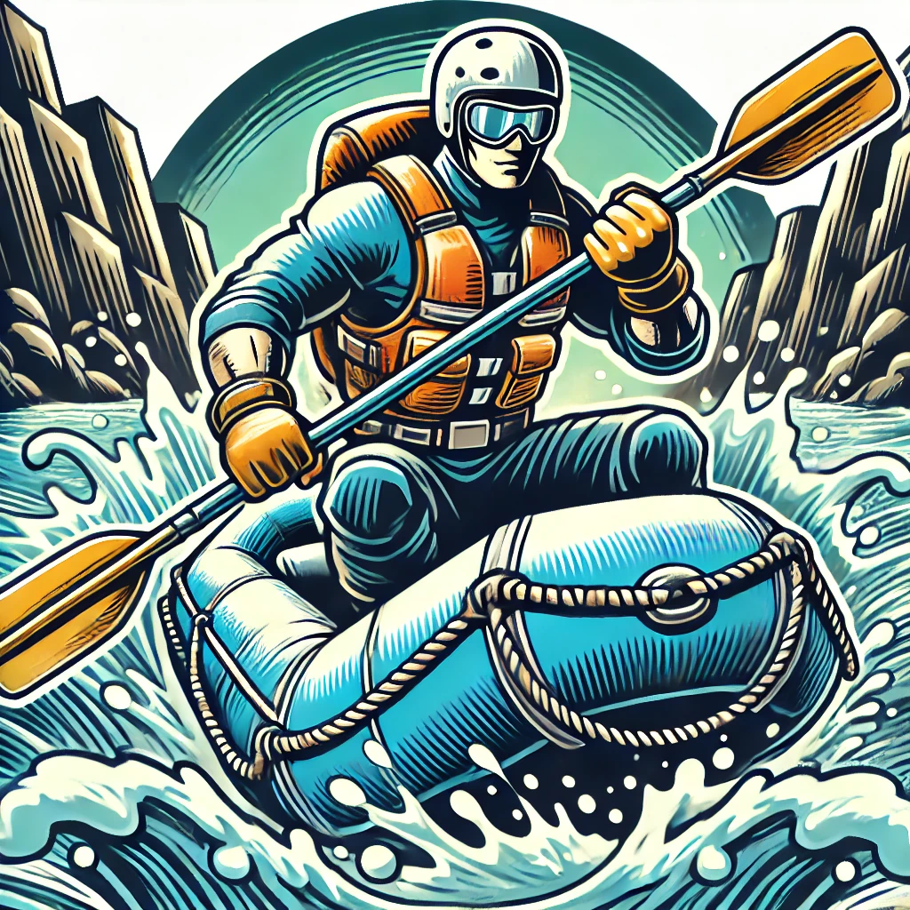

Overview
Purpose
The purpose of this website is to draw eyes to the business and generate revenue.
Audience
Our target audience are college aged young adults, we will try to offer them affordable trips with the hopes that they'll come back for more.
Branding
Website Logo
Style Guide
Color Palette
Palette URL: https://coolors.co/4166f5-be990a-8b0000-adf1f2-340beb
https://coolors.co/4166f5-be990a-8b0000-adf1f2-340beb| Primary | Secondary | Accent 1 | Accent 2 |
|---|---|---|---|
| [#4166f5] | [#be990a] | [#8b0000] | [white] |
Typography
Heading Font: PT Sans
Paragraph Font: PT Serif
Normal paragraph example
The best Whitewater Rafting in Colorado, White Water Rafting Company offers rafting on the Colorado and Roaring Fork Rivers in Glenwood Springs. Since 1974, we have been family owned and operated, rafting the Shoshone section of Glenwood Canyon and beyond.
Colored paragraph example
Trips vary from mild and great for families, to trips exclusively for physically fit and experienced rafters. No matter what type of river adventures you are seeking, White Water Rafting Company can make it happen for you.
Navigation
Site Map
Wireframes
Home